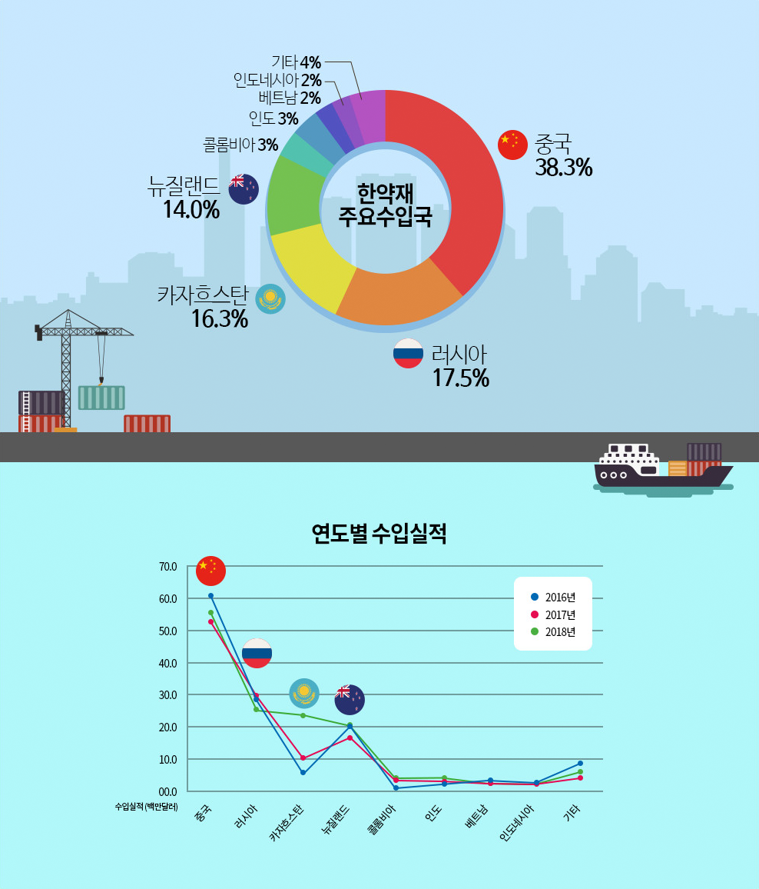
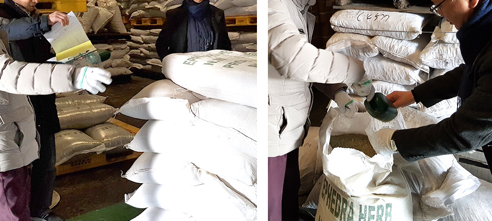

식약처 스케치
한의원이나 한약국에서 처방받아 복용하는 한약의 재료(한약재)는 주로 어디에서 수입되고 있을까. 수입 한약재는 안전할까? 한 번쯤 이런 의문을 품어
봤을 것이다. 의약품용으로 수입되는 한약재의 안전관리 현황에 대해 알아본다.
1. 우리나라의 수입 한약재는 어느 나라에서 얼마만큼 수입하는지 궁금합니다.
2018년 기준, 291종의 한약재 14,344t을 수입했는데, 이는 약 1.47억 달러에 해당합니다. 수입액 기준 상위 품목은 고가 한약재인 우황이 3,147만 달러,
녹용은 3,008만 달러, 사향은 1,319만 달러 순이고, 수입량 기준 상위 품목은 마황이 952t, 복령은 654t, 감초는 587t 순이었습니다.
2018년 수입금액 기준 한약재의 주요 수입국은 중국이 38.3%, 러시아가 17.5%, 카자흐스탄이 16.3%, 뉴질랜드가 14.0%입니다. 이중 러시아, 카자흐스
탄, 뉴질랜드 등은 녹용, 사향, 우황 등 주로 고가의 동물성 한약재를 우리나라에 수출하고 있어 품목 수는 얼마 되지 않지만, 수입실적으로는 매년 상위권
에 있습니다.

2. 한약재를 수입하는 절차는 어떻게 되나요?
우선, 국내 한약재 수입자가 수입할 한약재를 외국 물품 또는 수입을 목적으로 통관하고자 하는 물품을 보관하는 보세창고에 입고시킨 후 한약재 품질검
사기관에 검사 신청서를 제출합니다. 이후 검사 신청을 받은 검사기관의 직원이 보세창고에서 검체를 채취하고, 동시에 검체 채취 현장에서 2명의 관능검
사위원이 관능검사를 합니다. 마지막으로 검사기관의 시험실에서 위해물질검사, 정밀검사 등을 실시합니다.
3. 수입 한약재를 대상으로 진행하는 검사는 어떤 것이 있나요?
수입 한약재를 대상으로 하는 검사는 관능검사, 위해물질검사, 정밀검사가 있습니다.
우선 관능검사는 한약재의 기원, 성상, 이물, 건조 및 포장상태 등을 종합하여 그 적부를 판단하는 검사입니다. 다음으로 위해물질검사는 중금속, 잔류농
약, 이산화황, 곰팡이독소 등 인체 위해물질 함유 여부를 조사하는 검사입니다. 마지막으로 정밀검사는 대한민국약전, 생약규격집에 정하고 있는 기준 및
시험방법에 따라 실시하는 검사(위해물질검사 제외)이며, 검사의 종류에는 확인시험, 함량시험, 회분 등이 있습니다.
4. 수입 한약재의 검사 결과 부적합인 경우는 어떻게 되는지 궁금합니다.
수입단계에서 한약재를 검사하여 ‘부적합’처분을 받은 경우 부적합 한약재가 국민에게 유통되지 않도록 수입자에게 해당 제품의 반송 명령을 내리고, 수
입자가 적절하게 반송하였는지를 확인하고 있습니다.
5. 수입 한약재의 안전관리를 위해 식약처가 진행하고 있는 정책과 앞으로의 계획에 대해 말씀해 주세요.
수입 한약재 통관검사의 신뢰성을 확보하기 위해 수입 한약재 관능검사 및 검체 채취 현장에 식약처 공무원이 무작위로 참여하여 모니터링을 하고 있으
며, 한약재 품질검사기관의 시험검사와는 별도로 교차 품질검사를 하고 있습니다.
앞으로도 식약처는 국민께서 안심하고 한약을 복용하실 수 있도록 의약품용 한약재 관리를 철저히 하도록 하겠습니다.

28159 충청북도 청주시 흥더구 오송읍 오송생명2로 187 오송보건의료행정타운 식품의약안전처
COPYRIGHTⒸ By Ministry of food and drug safety ALL RIGHT RESERVED.